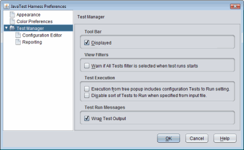
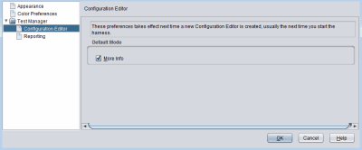
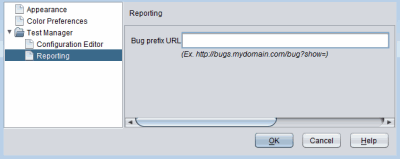

Test Manager Preferences
To change the Test Manager preferences, select File > Preferences > Test Manager.
The following preferences are set when the Test Manager folder is selected as follows:

- Tool Bar: Check Displayed to see the toolbar. If you enable or disable this option you must restart JavaTest to see the change.
- View Filters: Enables a warning message that is displayed if the All Tests filter is selected for a test run.
- Test Execution:
- Execution from tree popup includes configuration Test to Run setting:
- Disable sort of Tests to Run when specified from input file: This allows you to set the test execution order. Traditionally tests are run in the order they appear in the main test tree. This order is generally determined by the test suite architect. By selecting this option, the order execution will follow that in the input file for the Tests to Run section in the configuration. That is, the tests will be executed in the order they appear in that file, rather than being sorted and then executed. The default state of this checkbox is unchecked. See
- Test Run Messages: Wrap Test Output in the Test Run Messages Pane.
Configuration Editor
Check the More Info box to view the More Info pane in the configuration editor. Same as choosing View > More Info, except the preference will remain in future sessions.

Reporting
Set the bug prefix URL for KFL reports.

Copyright © 2002, 2011, Oracle and/or its affiliates. All rights reserved.